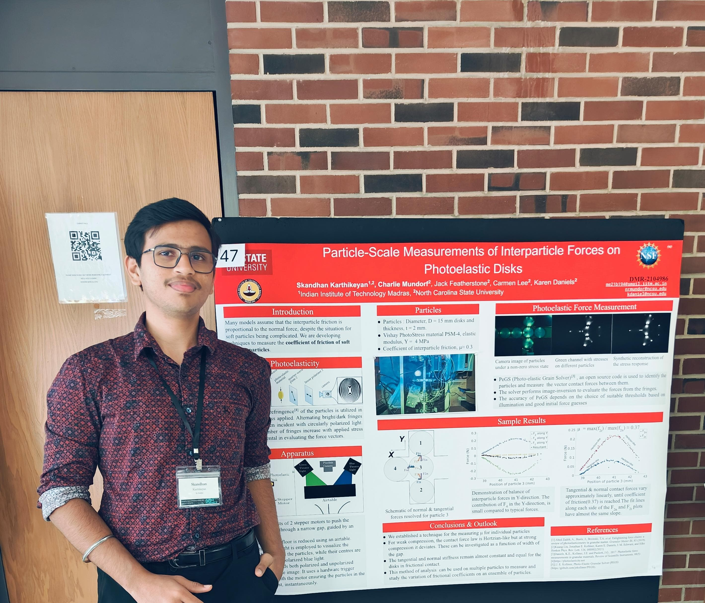
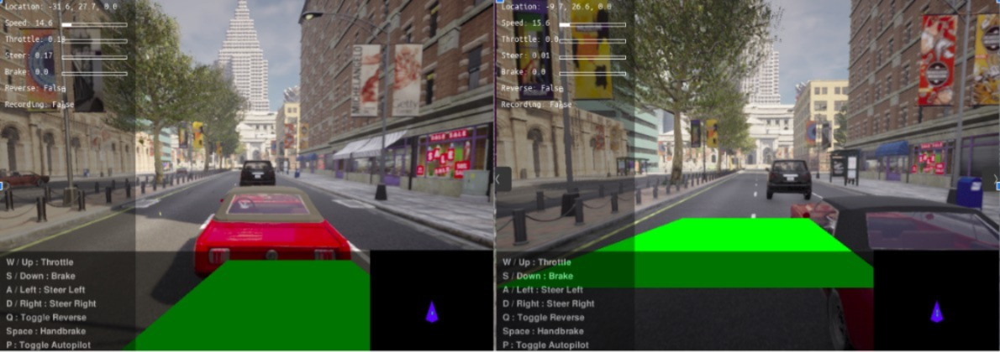
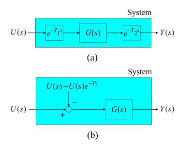
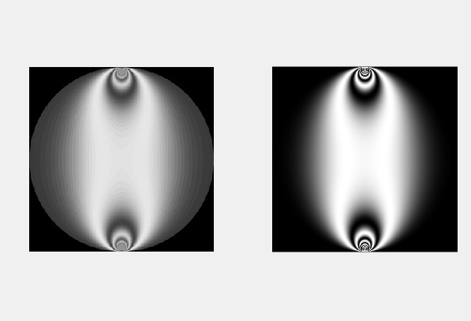

MSE student in Mechanical Engineering & Applied Mechanics (Mechatronics & Robotics Systems) at the University of Pennsylvania.
I build systems that sit at the junction of real-time embedded software, control theory, and applied ML, from diagnostic firmware on the factory floor to observer-based controllers for networked robots. B.Tech in Mechanical Engineering from IIT Madras, where I also led the Electronics Club as Controls Engineer and Team Lead (2023–2024).

I am a systems engineer who believes that the gap between a working prototype and a physics-based deployable system is where the real engineering happens. My focus is on closing that gap, designing control architectures and embedded pipelines that are robust in the field. I look for problems where hardware constraints, real-time requirements, and algorithmic complexity all collide.

What Autonomous vehicles struggle on roads of IITM, where animals make the scene unreliable and lane markings are unclear. Existing benchmarks were compute-heavy and not the best for real-time decision making for an on-campus shuttle.
How Designed a classical ML pipeline combining information from LiDAR point clouds with monocular camera frames. Built the perception stack from scratch: ground-plane segmentation, obstacle clustering, and a rule-based lateral controller, while deliberately keeping the stack simple, yet efficient for future edge deployment.
Result Delivered a reproducible, low-compute benchmark that future deep-learning approaches in the lab can be compared against; documented the full workflow as a starting point for autonomous driving research.

What Variable network latency causes instability in graphed robot networks moving with Delayed Self Reinforcement (DSR), a long-standing problem in decentralized formation control.
How Formulated a disturbance term and an observer that estimates the delay in the system in real time, then feeds a corrective feedback signal to the controller. Modeled network delay as a bounded perturbation and validated on a simulated ground robot.
Result Communication Observer-based compensation reduced cohesion loss by 33% while in transition and demonstrated robustness across variable delay profiles.

What Existing PeGS implementations were computationally restrictive for larger granular particles, where fringe patterns grow complex and existing methods stalled.
How Derived closed-form stress-field equations for soft photoelastic disks that replace existing method formulations. Validated a scaling trick to match experimental solutions and integrated it into Mr. Shins' PhD thesis.
Result Achieved a significant reduction in solve time for large-particle configurations, enabling the lab to run larger ensemble experiments.
The following materials highlight my past experience: Open Drive Folder
Challenge: The course was migrating its embedded lab infrastructure mid-semester,
with students needing to port Arduino-IDE workflows to PlatformIO (Espressif IDF) on
the Seeed Studio XIAO ESP32S3 Sense.
Action: Rewrote and tested all lab project codebases, spanning Magic Wand, Wake-word detection, etc. for the new toolchain,
reimplemented embedded inference pipelines, and created reference documentation.
Outcome: The new codebases became the starting point for future cohorts.